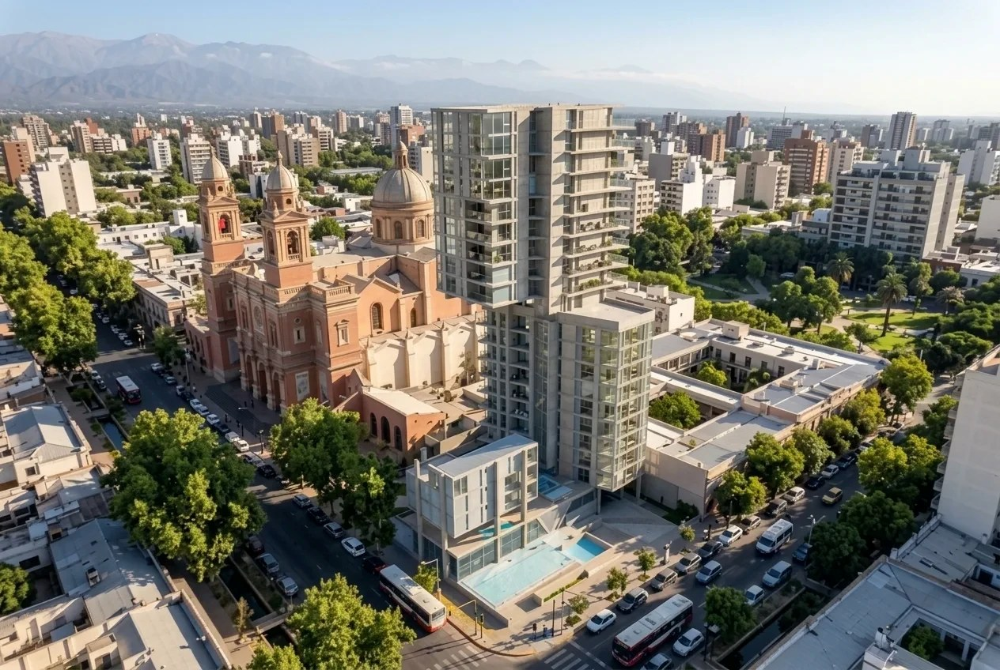
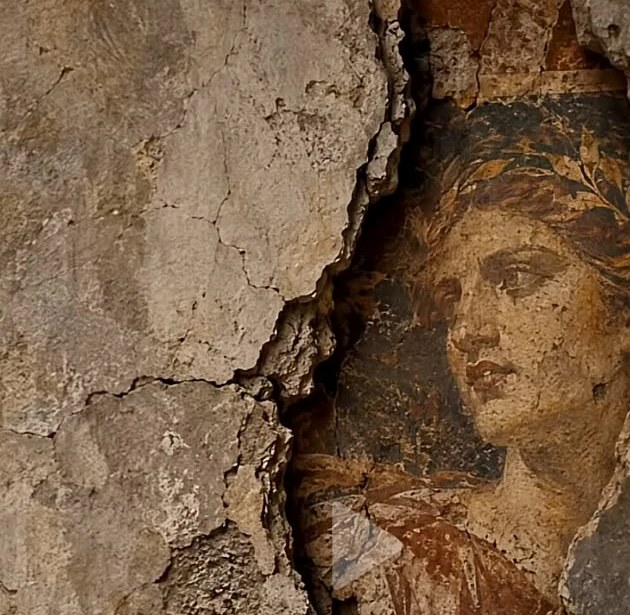
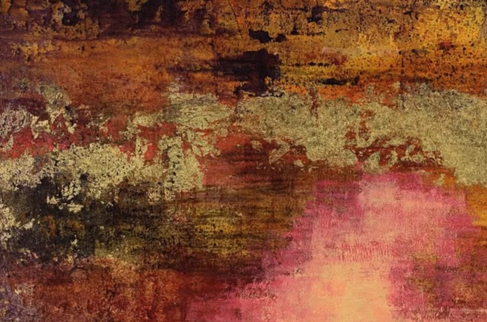
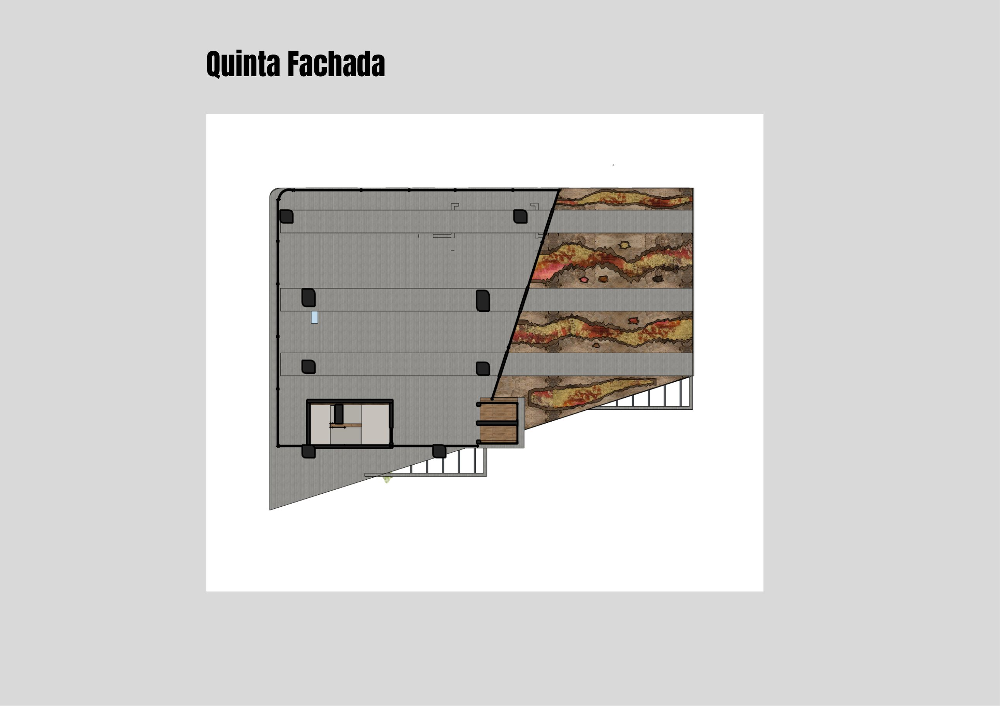

El edificio, piso por piso
Tocá un piso en la maqueta o elegilo de la lista: se abre y lo ves a 45°.

Una torre de hormigón visto sobre un estacionamiento del centro de Mendoza.
Bajá para recorrer el edificio
Tocá un piso en la maqueta o elegilo de la lista: se abre y lo ves a 45°.
Interiores y exteriores renderizados en D5. Tocá una imagen para verla grande.
Acá va el video del recorrido: del lobby, por el ascensor, hasta el departamento.
Plantas, cortes, vistas e implantación. Usá la rueda o los botones para acercarte y arrastrá para moverte por la lámina.
La quinta fachada es la cara del edificio que se mira desde abajo: el intradós del voladizo del piso 11, sobre la terraza común del piso 10. Ahí aparece la idea de Vestigium en su forma más literal: una pintura que asoma entre las grietas de un revoque gastado, como un fresco que el tiempo tapó y que vuelve a verse a pedazos.


El hormigón visto del edificio guarda la huella de cómo se construyó: la marca de cada tabla del encofrado. La quinta fachada cuenta otra huella, la de lo que había antes. Quien levanta la vista desde la terraza o desde la vereda no ve un cielorraso: encuentra un vestigio.

Esculturas y pinturas que forman parte del proyecto, en el lugar donde se ubican.
Proyecto de arquitectura. Centro de Mendoza, 32°53′11″ S · 68°50′28″ O.
Cascallares, Valentina · Matta, Valentino · Soler, Julieta. Arquitectura 3-C, 2026.
Volver al inicioImágenes y datos ilustrativos. Entorno urbano basado en OpenStreetMap.